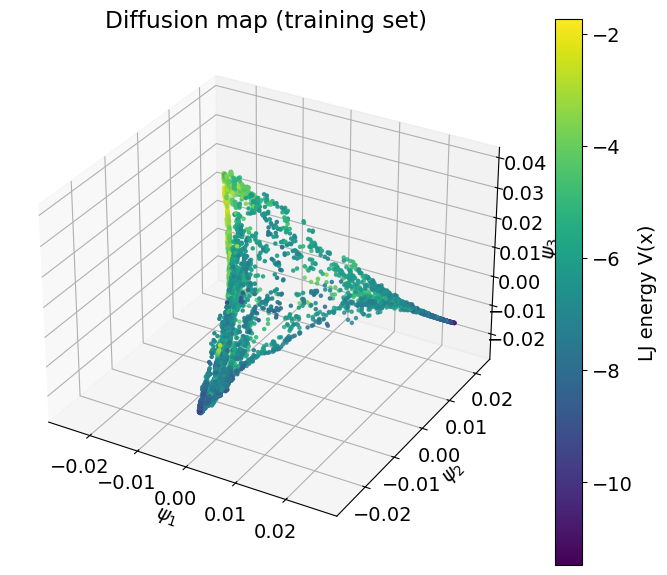
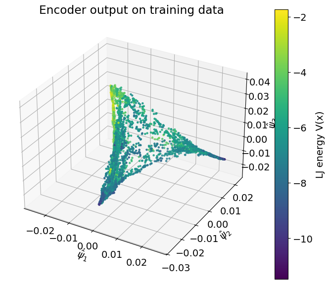
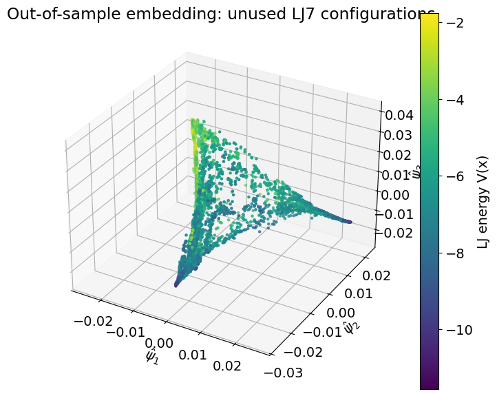
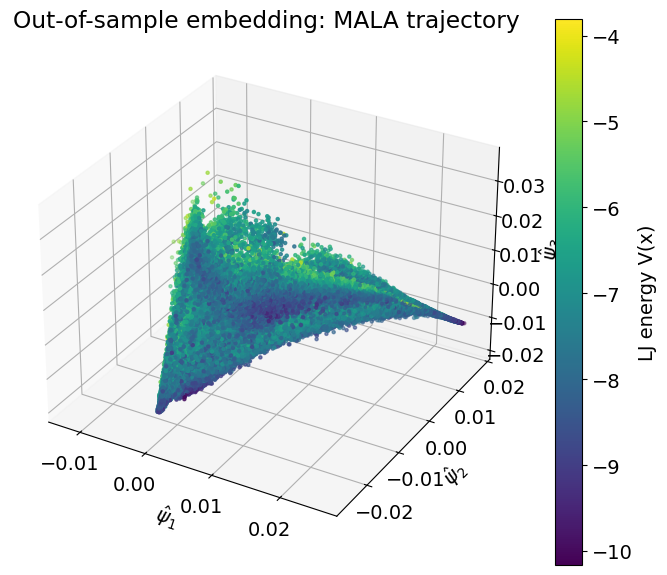

DiffusionNet for Out-of-Sample Molecular Embeddings
This project implements a diffusion-net encoder for out-of-sample extension on the LJ7 molecular configuration dataset. The key idea is to first learn a diffusion-map embedding on a training set and then train a neural encoder to reproduce those diffusion coordinates. Once that encoder is accurate, it can be applied to new configurations and trajectory data without recomputing the full graph Laplacian or eigendecomposition.
Main role: train a neural encoder that reproduces diffusion-map coordinates for LJ7 molecular configurations and extends the embedding reliably to unseen held-out data and dense MALA trajectory samples.
Motivation
Diffusion maps are powerful for discovering low-dimensional geometry, but their standard formulation is fundamentally transductive: the embedding is tied to the dataset on which the kernel graph is built. For many practical workflows, that is a limitation, because new samples arrive after the diffusion map has already been computed. The purpose of DiffusionNet here is to turn the learned geometry into a reusable encoder that maps fresh configurations directly into the same low-dimensional coordinate system.
Training Target
The training target is the diffusion-map embedding of the same 5000 LJ7 configurations used in the diffusion-maps analysis. The eigenvalue spectrum of the Markov operator shows a clear gap after the third nontrivial eigenvalue, indicating that a two- to three-dimensional representation captures the main manifold structure. Based on that, I use the first three nontrivial diffusion coordinates as the encoder target.

Diffusion-map embedding of the training configurations, colored by Lennard-Jones energy. This embedding serves as the supervision target for the encoder.
Encoder Design and Training
I follow the diffusion-net idea in the encoder-only setting. Instead of building a full autoencoder, I train a feedforward neural network whose output dimension matches the three diffusion coordinates. The loss is simply mean squared error between the encoder output and the diffusion-map coordinates on the training set. This is deliberately simple and follows the project guidance as well as the approach used in related work.
The encoder uses several fully connected layers with smooth activations and is trained with an 80-20 split between training and validation data. The training is reported to be stable, with both training and validation losses decreasing to the order of \(10^{-3}\). That matters because it suggests the network is not merely memorizing a noisy embedding, but actually learning a smooth approximation to the coordinate map.
Reproducing the Training Embedding
On the training data, the encoder reproduces the diffusion-map coordinates with very high fidelity. The learned output aligns closely with the original diffusion-map geometry and preserves the smooth variation of the potential energy along the manifold. This is the first important checkpoint: if the network cannot recover the training embedding faithfully, then any out-of-sample extension would be difficult to trust.

Encoder output on the training data. The learned representation closely matches the geometry and energy organization of the diffusion-map target.
Held-Out Unused Configurations
The first true out-of-sample test uses the unused portion of LJ7bins_confs.txt, consisting of 5071 configurations filtered out earlier in the workflow. The encoder maps these unseen configurations onto the same manifold learned from the training set, with no visible folding, fragmentation, or obvious extrapolation failure. The energy field remains consistent with the learned geometry, which is a strong qualitative sign that the encoder has captured the same structural coordinates as the original diffusion map.

Out-of-sample embedding for unused configurations from LJ7bins_confs.txt. The encoder places unseen data smoothly on the same learned manifold.
MALA Trajectory Generalization
The second and more interesting test uses MALAtrajectory.txt, a much denser dataset generated by the Metropolis-adjusted Langevin algorithm. This trajectory explores the same energetic basin at higher resolution than the subsampled configuration set. When passed through the encoder, the trajectory fills in the interior of the manifold in a way that remains consistent with the previously learned diffusion-map geometry.
This is an important result because it goes beyond simple test-set interpolation. The MALA trajectory is denser and structurally different from the data used for training, yet the encoder still places it meaningfully inside the same low-dimensional coordinate system. That is exactly the kind of behavior needed if the learned embedding is going to be useful downstream for analysis or simulation workflows.

Out-of-sample embedding of the dense MALA trajectory. The trajectory fills the manifold interior in a way that is consistent with the potential landscape.
Takeaways
The main result is that the diffusion-map geometry can be turned into a reusable encoder without losing the structure that made the original embedding useful. The network reproduces the training coordinates closely, then maps both unused LJ7 configurations and dense MALA trajectory data into the same low-dimensional space in a way that remains consistent with the energy-organized manifold.
That makes the conclusion practical as well as geometric: the project does not only discover a manifold, it provides a way to extend that representation to new samples without rebuilding the kernel graph and eigendecomposition each time. The held-out and trajectory tests are what make that conclusion credible.
Back to Projects